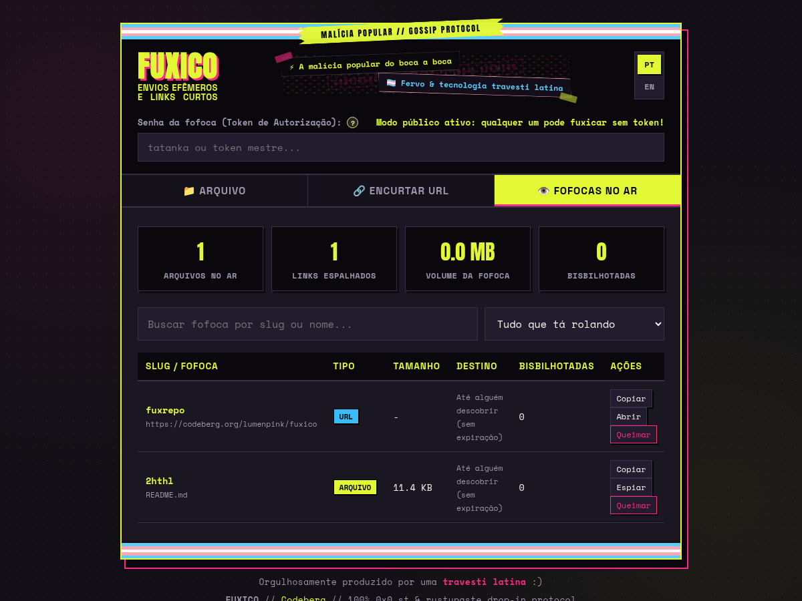

A malícia popular do boca a boca. Compartilhar arquivos e links não precisa parecer um manifesto de guerra fria; pode ser a esperteza de passar a informação adiante pelo puro prazer de fazer a roda girar.
⚡ Instalação Universal em 1 Linha
Instale a CLI nativa multiplataforma com um único comando no terminal. Detecta automaticamente sua CPU (x86_64, aarch64, armv7, armv6) e baixa o executável standalone pronto:
curl -fsSL https://fuxico.2lp.in/install.sh | bash
Depois é só soltar o verbo: fux foto.png --caduca 2h --copia ou mandar tudo via pipe: cat dump.sql | fux -q.
📸 Prints Reais da Interface & Terminal
Capturas pixel-perfect da aplicação Fuxico rodando localmente (Dropzone, Dashboard de Gestão com preview e Terminal CLI):

Dropzone & Envio Efêmero
Cabeçalho com colagem zine, faixa trans, tempo de retenção, queima-de-arquivo (oneshot) e slug cifrado de 16 caracteres.

Fofocas no Ar & Gestão
Estatísticas em tempo real, contadores de views, contagem regressiva, preview embutido e exclusão imediata com X-Token.

fux em Ação no Terminal
Regra de ouro: deboche descritivo no stderr, ficha de gestão e URL pura no stdout para pipes perfeitos no xclip.
🛡️ Capacidades do Sistema
Motor Duplo de Protocolos
Compatibilidade imediata com 0x0.st (The Null Pointer) e rustypaste. Clientes como rpaste ou 0x0 funcionam sem alterar nada.
Publicação Zine em Markdown
Renderização nativa de Markdown (GitHub/Obsidian) com destaque de sintaxe, callouts, wikilinks, sumário automático e alternador instantâneo entre temas Zine e Acadêmico.
Gists Multifiles & Arquivo ZIP
Compartilhamento de múltiplos arquivos de código via fux gist. Interface com abas, visualização de código cru (raw) e download automático de ZIP compactado.
Servidor Git HTTP Smart Protocol
Repositórios Git remotos criados instantaneamente via fux git init. Suporte completo a git clone e git push via HTTP com explorador de commits integrado.
Servidor em Arquivo Único
Instalação instantânea, sem complicação e sem pacotes extras. O arquivo fuxico.php roda em qualquer servidor com PHP 8.2+.
Blindagem de Acesso Direto
Arquivos físicos trancados com Require all denied. O acesso é intermediado via streaming PHP com detecção segura de MIME e nosniff.
Isenção Criptográfica
Scripts perigosos (.php, .exe, .sh) são bloqueados, mas arquivos criptografados legítimos (.gpg, .asc, .pgp) são aceitos sem restrições.
Banco SQLite Embutido
Indexação atômica, contagem de acessos, destruição oneshot e purga automática de arquivos vencidos sem necessidade de bancos pesados.
Apoio Prioritário a SBCs & ARM32
Binários standalone crus para Orange Pi, Banana Pi, Raspberry Pi, BeagleBone e máquinas legadas de 32 bits — sem complicação com glibc.
🚀 Explore a Documentação
Acesse os manuais detalhados de configuração do servidor, guia de comandos da CLI, tabela de hardware, especificações de protocolo e central zine: